Habilidades
Javascript
Html
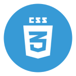
Css
Sass
Figma
Sobre mim
Sou estudante do ensino médio integrado ao técnico em informática no Colégio Eniac, no curso técnico aprendi sobre desenvolvimento web e me interessei em front-end. Participo ativamente de eventos de tecnologia como a FECEG(Feira de Ciências e Engenharia de Guarulhos) e hackathons como o Revolution, com o objetivo de aumentar minhas experiências. Atualmente iniciei um estágio como desenvolvedor front-end, buscando contínuo aprendizado, crescimento profissional e expandir novos conhecimentos.
Certificados
FECEG (Feira de Ciências e Engenharia de Guarulhos)
Tem como objetivo fomentar um ambiente de cultura, de pesquisa e incentivar o desenvolvimento científico na cidade de Guarulhos e região.
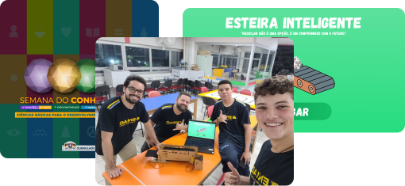
Certificado
MOSTRA TECH
A Mostra Tech é uma feira onde jovens talentos têm a oportunidade de apresentar os projetos que desenvolveram ao longo de seus cursos, abrangendo uma ampla gama de áreas técnicas e tecnológicas.
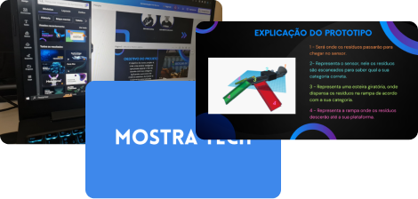
Certificado
REVOLUTION
O revolution é uma maratona de inovação. Onde os alunos pensam em um periodo de 24 horas soluções tângíveis para problemas reais.
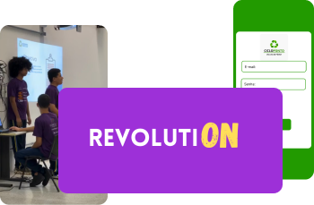
Certificado
Projetos
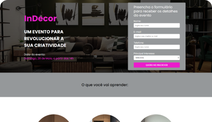
Landing page de um evento de decoração, usando Html, Css e Javascript.
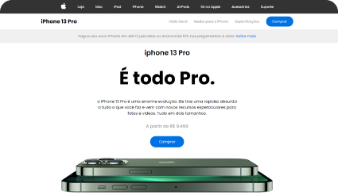
Site clone da Apple exibindo o Iphone 13 Pro, usando Html, Css, Sass e Javascript.
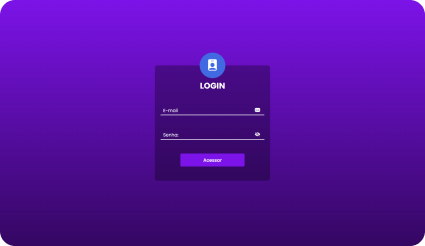
Tela de login com validação, usando Html, Css, Sass e Javascript
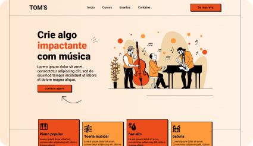
Landing page de uma escola de musica, foi usado Html, Css e Sass.
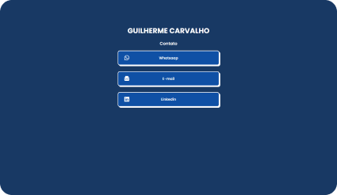
É um projeto que apresenta links para ser redirecionado para outro site, foi usado Html, Css.
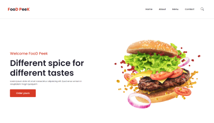
Uma landing page da Food Peek uma rede de hamburgueria, foi usado Html, Css, e Javascript
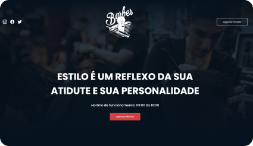
Landing page de uma rede de barbearia, foi usado html, Css e Sass
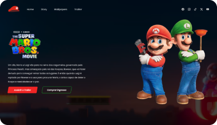
Landing page do filme do super mario bros, foi usado Html, Css e Javascript
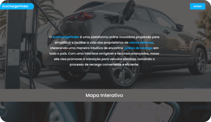
Landing page que demostra beneficios de carros eletricos, foi usado Html, Css e Sass
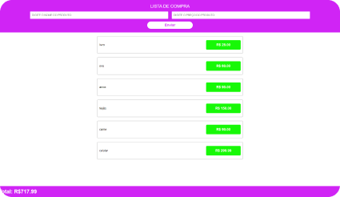
Sistema para calcular gastos no mercado, foi usado Html, Css e Javascript.
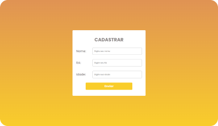
Tela de cadastro com três campos para prenchimento, usando Html, Css.